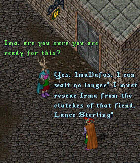
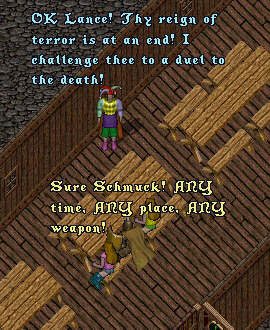
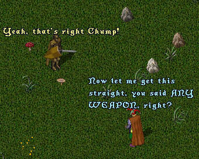
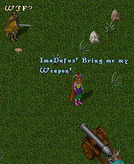
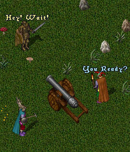
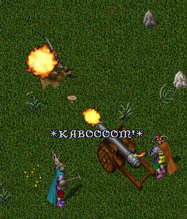
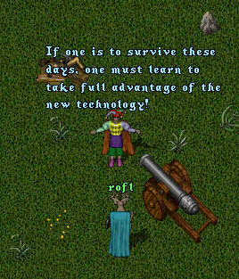

Episode 61: The Fall and Rise of Imanewbie (Part 3). Well, the time has come for the showdown between ImaNewbie and the evil Lance Sterling! ImaNewbie has been training vigorously but decides that it is now or never. As the scene opens we see ImaNewbie and ImaDufus in front of the Bank.

ImaNewbie proceeds to the local tavern where he confronts
Lance Sterling and throws down the gauntlet.

ImaNewbie and Lance Sterling proceed to an
open field and prepare to do battle.




